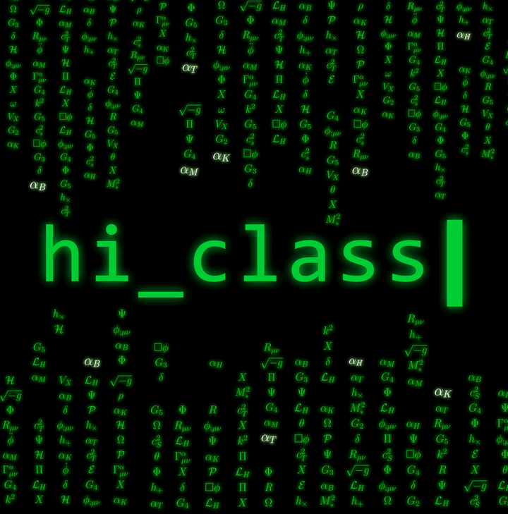
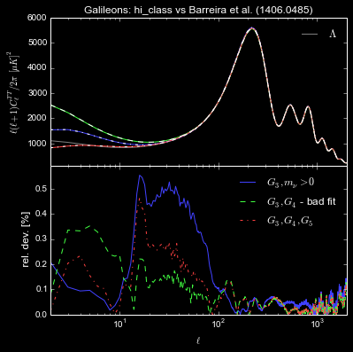

Horndeski in the Cosmic Linear Anisotropy Solving System
An Einstein-Boltzmann solver for dark energy and modified gravity.
99 papers v2.0 built on CLASS ascl:1808.010
The Science
Linear cosmology for general scalar-tensor gravity
hi_class implements Horndeski's theory in the modern
Cosmic Linear Anisotropy Solving System.
It can be used to compute any linear cosmological observable, including FRW distances, CMB,
matter power and number count spectra. hi_class can be readily interfaced with
Monte Python
to test gravity and dark energy models.
Horndeski is the most general scalar-tensor theory whose equations of motion remain second order, and contains many well known models, including (but by no means limited to) covariant Galileons, Brans-Dicke, f(R), chameleons, k-essence and quintessence. It is not, however, the most general healthy scalar-tensor theory: disformal couplings between the scalar field and matter evade Horndeski's theorem, giving higher-order equations of motion that hidden constraints nonetheless keep free of Ostrogradski instabilities (see PRD 89 (2014) 064046).
hi_class relies on a reformulation of the Effective Field Theory for Dark Energy developed
by E. Bellini and I. Sawicki (see
JCAP 1407 (2014) 050).
Any linear observable
FRW distances, CMB temperature and polarization, matter power and number counts — and their cross-correlations.
Fast enough for Bayesian analysis
A full Horndeski model — background, lensed CMB and matter power spectrum — computes fast enough to sample the parameter space of each model. Interfaces directly with Monte Python.
Covariant or effective theory
Start from a Horndeski Lagrangian and hi_class derives the background and
α-functions itself, or parametrize the α-functions directly.
Free and open
Available to the scientific community on GitHub, and registered in the Astrophysics Source Code Library.
Flexible input
Two ways to test gravity
The effective-theory approach consists of providing a parametrization of the α-functions and the equation of state, independent of any underlying theory, with the aim of testing for particular physical effects.
The covariant-theory approach starts from a particular model defined in terms of the
Horndeski functions Gi. Upon specifying the initial conditions for the background field
and the additional parameters of the theory, hi_class automatically computes the
cosmological background and the α-functions are fully determined.
Worked-out examples ship with the code — Galileon, nKGB, quintessence (monomial and tracker),
Brans-Dicke and α-attractors — and serve as a template for further implementations.
hi_class is easy to use and to modify, so new models are straightforward to add.
Covariant theory
# a quartic Galileon Lagrangian
# G2 = -X
# G3 = c3 X /(H0^2 Mp)
# G4 = Mp^2/2 + c4 X^2/(H0^2 Mp)^2
gravity_model = galileon
gravity_submodel = quartic
# xi; the rest follows from the tracker
parameters_smg = 2.43
Omega_smg = -1Effective theory
# the alpha-functions directly, each one
# proportional to Omega_smg(a)
gravity_model = propto_omega
# x_k, x_b, x_m, x_t, M*^2_ini
parameters_smg = 1., 0., 0., 0., 1.
# and an expansion history to go with it
expansion_model = lcdm
expansion_smg = 0.5
Omega_smg = -1hi_class derive the α-functions; the effective-theory approach
specifies those functions directly, and never commits to an underlying theory. After
JCAP 1708 (2017) 019.Presented and described in
- hi_class: Horndeski in the Cosmic Linear Anisotropy Solving System
- hi_class: Background Evolution, Initial Conditions and Approximation Schemes
Selected results obtained with hi_class
- The Cosmological Evidence for Non-Minimal Coupling
- Modified gravity constraints from the full shape modeling of clustering measurements from DESI 2024
- Testing modified gravity at cosmological distances with LISA standard sirens
- Euclid: Constraining linearly scale-independent modifications of gravity with the spectroscopic and photometric primary probes
- Scant evidence for thawing quintessence
- Positivity Bounds on Dark Energy: When Matter Matters
- KiDS+GAMA: Constraints on Horndeski gravity from combined large-scale structure probes
- Early modified gravity in light of the H0 tension and LSS data
See all 99 publications using
hi_class → If your article is not listed, please
contact us.
The Code
Flexible, fast and accurate
hi_class computes the cosmological predictions of alternative theories of
gravity. It solves the linear equations starting deep in the radiation era, and returns any cosmological
observable — distances, the matter power spectrum, Cosmic Microwave Background temperature and
polarization, and their correlation with the matter distribution.
- Flexible
- Test gravity two ways: parametrize the α-functions and the equation of state independently
of any underlying theory, or start from a covariant Horndeski Lagrangian and let
hi_classdetermine the background and the α-functions itself. Worked-out models ship ready to run, and every configuration is screened for ghost and gradient instabilities before it is used. - Fast
- A full model — background, lensed CMB and matter power spectrum — is computed efficiently, fast
enough to sample the parameter space of each model. That is what makes Bayesian parameter
estimation practical, and
hi_classinterfaces directly with Monte Python to do it. - Accurate
- Accuracy was established in a dedicated comparison paper,
A comparison of
Einstein-Boltzmann solvers for testing General Relativity, which ran the same models through
four independent codes:
hi_class, EFTCAMB, COOP and the CAMB-based Galileon code of Barreira et al. Across that range of models the CMB and matter power spectra agree to 0.1% — as good as base CLASS/CAMB at default precision parameters — and to 0.5% at low multipoles, comfortably within cosmic variance. That is sufficient precision for tests of gravity with next-generation surveys.

hi_class and the
other codes in the comparison paper.From Python
Drive it from a script or a notebook
Building the code also builds classy, the Python wrapper inherited from CLASS.
Parameters go in as a dictionary — hi_class options alongside the standard CLASS
ones — and spectra come back as arrays, ready to plot. Worked examples ship in
notebooks/.
from classy import Class
cosmo = Class()
cosmo.set({
'output': 'tCl,pCl,lCl,mPk',
'lensing': 'yes',
# the same quartic Galileon, driven from Python
'gravity_model': 'galileon',
'gravity_submodel': 'quartic',
# xi = (H phi')/(a H0^2); the remaining parameters follow
# from Omega_smg and the tracker condition
'parameters_smg': 2.43,
'Omega_smg': -1, # fixed by the closure equation
'Omega_Lambda': 0,
'Omega_fld': 0,
})
cosmo.compute()
cl = cosmo.lensed_cl(2500) # TT, TE, EE, lensing
pk = cosmo.pk(0.1, 0.) # P(k = 0.1/Mpc, z = 0)Download
Get hi_class
hi_class is freely available to the scientific community. The code can be cloned from the
GitHub repository or downloaded as a compressed archive. To get started and find detailed information on
the available models and code functionality, please read the hi_class.ini file.
How to cite
If you use hi_class in a publication or preprint, please cite at least the original CLASS
paper and the two hi_class papers.
Resources
Documentation, courses and tools
The Team
Who develops hi_class
- Emilio Bellini
- Pedro G. Ferreira
- Carlos Garcia-Garcia
- Julien Lesgourgues
- Janina Renk
- Ignacy Sawicki
- Dina Traykova
- Miguel Zumalacarregui
We are very grateful to Thomas Tram for his invaluable advice, and to the many users who have offered suggestions, found bugs and contributed to improve the code.
Contact
Get in touch
If you are interested in using a beta version, or for other inquiries about hi_class,
please contact emilio - bellini -- sissa.it or
miguel - zumalacarregui -- aei.mpg.de.
Bug reports and feature requests are also welcome on the GitHub issue tracker and the hi_class forum.
Publications
Papers using hi_class
99 publications have used hi_class
Spanning 2015–2026, from single-author theory papers to Euclid, DESI, KiDS and LISA collaboration analyses. If your article is missing, please let us know.
2026 7
- The Status of Single Scalar Field Dark Energy
- Constraining dark energy with complementary probes of large-scale structure
- Dark energy perturbations and the robustness of cosmological neutrino-mass constraints
- cloelib: A Flexible Python Library for Computing Cosmological Observables in the Euclid Era
- PySCo-EFT and ECOSMOG-EFT: a tandem of N-body simulation codes for the Effective Field Theory of Dark Energy
- H-EFTCAMB: A Cobaya-Integrated, Python-Wrapped Extension of EFTCAMB for Covariant Horndeski Gravity
- On the Difficulties with Late-Time Solutions for the Hubble Tension
2025 18
- Abundance of cosmic voids in EFT of dark energy
- Non-parametric exploration of minimally coupled gravity with phantom crossing
- KiDS-Legacy: Constraints on Horndeski gravity from weak lensing combined with galaxy clustering and CMB
- Euclid preparation. Review of forecast constraints on dark energy and modified gravity
- Clustering in dynamical dark energy: observational constraints from DESI, CMB, and supernovae
- New multiprobe analysis of modified gravity and evolving dark energy
- A Dynamical Scalar Field Model for Dark Energy: Addressing the Hubble Tension and Cosmic Evolution
- KGB-evolution: a relativistic N-body code for kinetic gravity braiding models
- From Dark Radiation to Dark Energy: Unified Cosmological Evolution in K-essence Models
- Cosmological constraints on Galileon dark energy with broken shift symmetry
- Dark energy constraints in light of theoretical priors
- Monodromic Dark Energy and DESI
- Euclid preparation. Constraining parameterised models of modifications of gravity with the spectroscopic and photometric primary probes
- Nonlinear dynamics in Horndeski gravity: a renormalized approach to effective gravitational coupling
- The Cosmological Evidence for Non-Minimal Coupling
- Modified gravity constraints with Planck ISW-lensing bispectrum
- Preference for evolving dark energy in light of the galaxy bispectrum
- Robustness of Dark Energy Phenomenology Across Different Parameterizations
2024 12
- Exploring cosmological imprints of phantom crossing with dynamical dark energy in Horndeski gravity
- Modified gravity constraints from the full shape modeling of clustering measurements from DESI 2024
- Matching current observational constraints with nonminimally coupled dark energy
- Testing gravity with the full-shape galaxy power spectrum: First constraints on scale-dependent modified gravity
- Fast radio bursts as a probe of gravity on cosmological scales
- Constraints on dark energy and modified gravity from the BOSS Full-Shape and DESI BAO data
- Scant evidence for thawing quintessence
- Interpretable and physics-informed emulator for the linear matter power spectrum from machine learning
- mochi_class: Modelling Optimisation to Compute Horndeski In class
- Modified gravity interpretation of the evolving dark energy in light of DESI data
- A simple prediction of the non-linear matter power spectrum in Brans-Dicke gravity from linear theory
- Constraining dark energy with the integrated Sachs-Wolfe effect
2023 6
- Probing Early Modification of Gravity with Planck, ACT and SPT
- Machine learning unveils the linear matter power spectrum of modified gravity
- Euclid: Constraining linearly scale-independent modifications of gravity with the spectroscopic and photometric primary probes
- Probing Dark Energy and Modifications of Gravity with Ground-Based Millimeter-Wavelength Line Intensity Mapping
- Revisiting Vainshtein Screening for fast N-body simulations
- Testing gravity on cosmological scales: theoretical predictions with the COLA method
2022 6
- The Effective Fluid Approach for Modified Gravity and Its Applications
- Testing gravity with gravitational wave friction and gravitational slip
- A Forecast for Large Scale Structure Constraints on Horndeski Gravity with Line Intensity Mapping
- Neutrino mass and kinetic gravity braiding degeneracies
- Enabling matter power spectrum emulation in beyond-ΛCDM cosmologies with COLA
- Positivity bounds from multiple vacua and their cosmological consequences
2021 5
- On tachyonic stability priors for dark energy
- Fully relativistic predictions in Horndeski gravity from standard Newtonian N-body simulations
- Theoretical priors in scalar-tensor cosmologies: Shift-symmetric Horndeski models
- Positivity Bounds on Dark Energy: When Matter Matters
- Testing modified (Horndeski) gravity by combining intrinsic galaxy alignments with cosmic shear
2020 12
- Can Conformally Invariant Modified Gravity Solve The Hubble Tension?
- Early modified gravity in light of the H0 tension and LSS data
- Scalar-tensor cosmologies without screening
- Constraining Scalar-Tensor Modified Gravity with Gravitational Waves and Large Scale Structure Surveys
- Relativistic Corrections to the Growth of Structure in Modified Gravity
- Cross-bispectra Constraints on Modified Gravity Theories from Nancy Grace Roman Space Telescope and Rubin Observatory Legacy Survey of Space and Time
- Information entropy in cosmological inference problems
- Improvements in cosmological constraints from breaking growth degeneracy
- A larger value for H0 by an evolving gravitational constant
- The H0 tension: ΔG_N vs. ΔN_eff
- Gravity in the Era of Equality: Towards solutions to the Hubble problem without fine-tuned initial conditions
- Cosmological constraints on dark energy in light of gravitational wave bounds
2019 11
- Theoretical priors in scalar-tensor cosmologies: Thawing quintessence
-
hi_class:Background Evolution, Initial Conditions and Approximation Schemes - Testing modified gravity at cosmological distances with LISA standard sirens
- Dark sector evolution in Horndeski models
- The Shape Dependence of Vainshtein Screening in the Cosmic Matter Bispectrum
- Alpha-attractor dark energy in view of next-generation cosmological surveys
- Modified Gravity Away from a ΛCDM Background
- Designing Horndeski and the effective fluid approach
- Positivity in the sky
- The phenomenology of beyond Horndeski gravity
- KiDS+GAMA: Constraints on Horndeski gravity from combined large-scale structure probes
2018 12
- Cosmological parameter constraints for Horndeski scalar-tensor gravity
- Radiative stability and observational constraints on dark energy and modified gravity
- No Slip CMB
- Inflation and Early Dark Energy with a Stage II Hydrogen Intensity Mapping experiment
- Gravity's Islands: Parametrizing Horndeski Stability
- Dark Energy in light of Multi-Messenger Gravitational-Wave astronomy
-
Testing Horndeski gravity as dark matter with
hi_class - Investigating scalar-tensor-gravity with statistics of the cosmic large-scale structure
- Dark energy from α-attractors: phenomenology and observational constraints
- Testing (modified) gravity with 3D and tomographic cosmic shear
- The impact of relativistic effects on cosmological parameter estimation
- A comparison of Einstein-Boltzmann solvers for testing General Relativity
2017 4
2016 5
- Hiding neutrino mass in modified gravity cosmologies
- Early Cosmology Constrained
- Initial conditions for the Galileon dark energy
- Gravity at the horizon: on relativistic effects, CMB-LSS correlations and ultra-large scales in Horndeski's theory
- Constraints on deviations from LCDM within Horndeski gravity
2015 1
No publications match that search.